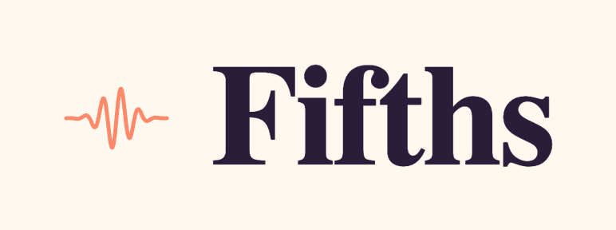
Everything you need to ship the app. Logos, icons, favicons and color tokens — generated from the prototype.
Primary logo
Coral wave + display serif wordmark. Use horizontal by default.
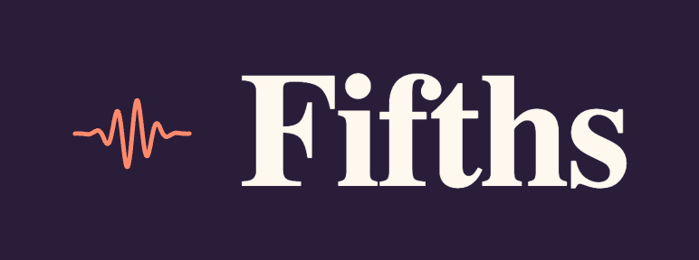
Stacked & wordmark
Stacked for square placements; wordmark alone when the mark is already in context.
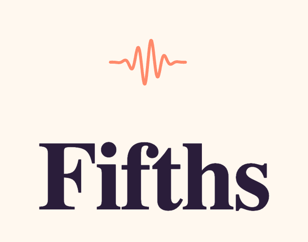
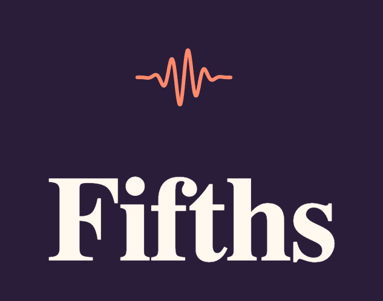
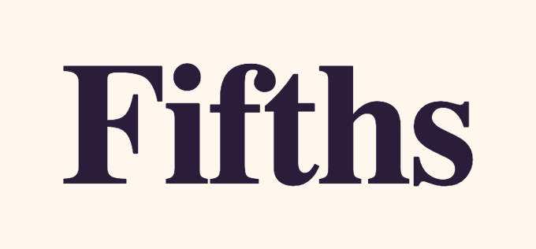
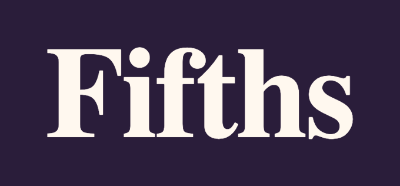
Monochrome
For single-ink contexts — print, embossing, UI accents.
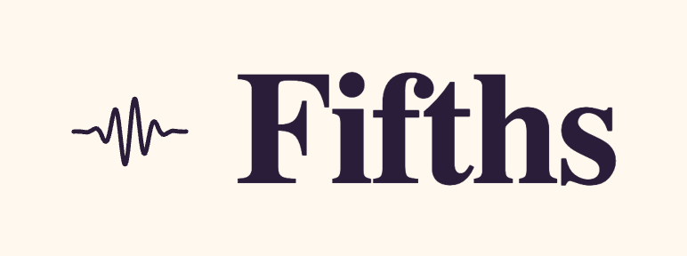
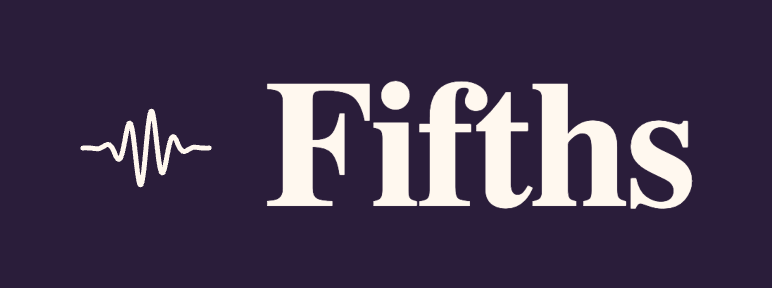
App icon
iOS 1024, Android Play Store 512, and on-device preview.
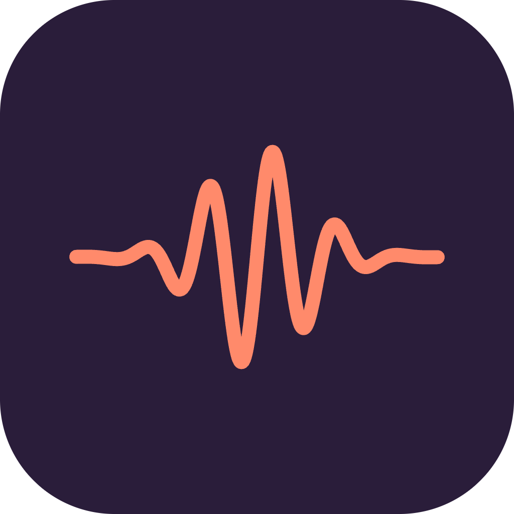
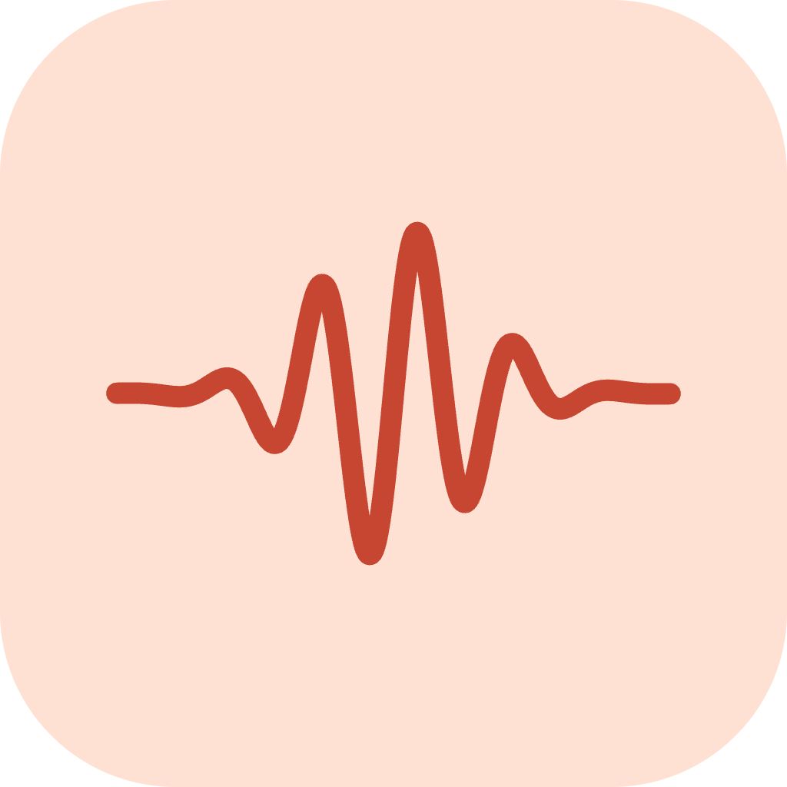
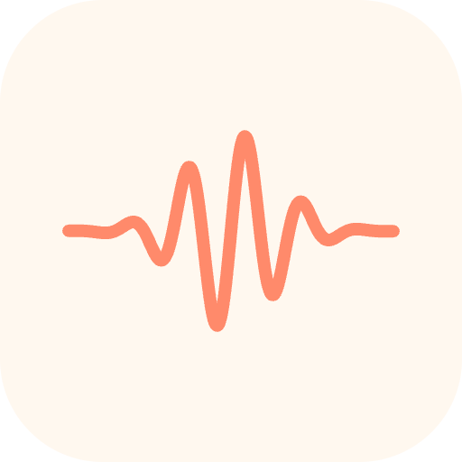
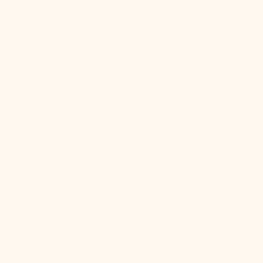
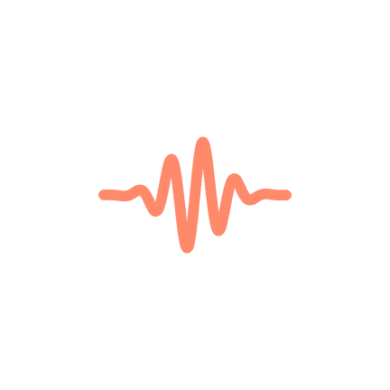
On device
How the icon sits beside stock apps on the home screen.
 Messages
Messages Mail
Mail Camera
Camera Phone
Phone MusicNotes
MusicNotesFavicons
Pre-sized PNGs for the browser tab, mobile home-screen, and social embeds.
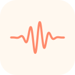
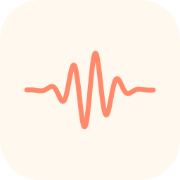
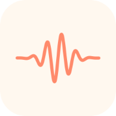
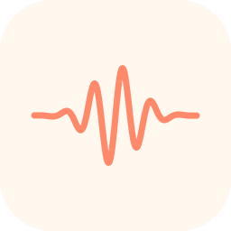
Color
Coral leads; ink and paper ground it; four accents for categories.
Typography
A high-contrast serif for display & headlines. A clean sans for UI & body.
Practice in fifths.
Three minutes a day. That's all it takes to build an ear.
Spacing & shape
A loose 4pt scale, four radii, three elevations. Enough rhythm to feel composed without rigidity.
Spacing scale
Most layout uses 8 / 12 / 16 / 22 for gaps and 36 / 48 for section breathing room. Screen side padding on phone is 22px.
Radii
Chips & buttons are fully pill-shaped (--r-full). Cards use --r-md (18). Never mix sharp corners into the UI.
Elevation
Shadows are warm-purple, not neutral black. Never stack shadows on dark mode — use hairlines instead.
Offset shadow (cartoon)
Path nodes and unit banners use a hard offset shadow — a solid 3–6px vertical slab of the darker ink tone behind the element. It's what gives the UI its playful "sticker" feel.
Components
Building blocks used everywhere. Every interactive element is a "Bean" — pill-shaped, color-toned, confident.
Bean · button tones
Primary action is coral. Secondary is ink. Categorical tones (mint/lav/butter/sky) tie to curriculum segments. Soft is the neutral; ghost for tertiary actions.
Sizes
radius = height / 2 · border 1.5px · translateY(-1px) on hover
ColorPill · categorical chip
Tiny uppercase label chip. Used for accuracy scores, category tags, status. Background uses the soft tint; text uses the ink.
Music notation · the chip family
Five consistent chip shapes for the five ways we refer to music in the UI. Same 48px height, same 17px radius, same display-font weight — the system reads even when the label changes. Color carries function, not identity.
System rules. Accidentals (♭, ♯, °) always use the proper glyph — never plain b/# in copy. Roman numerals: upper-case = major, lower-case = minor, ° = diminished, 7 = dominant. Intervals: P = perfect, M = major, m = minor, TT = tritone. Chord formula: root + quality + extension with no spaces — e.g. Cmaj7, Dm, G7, F♯m7♭5. Row 05 shows the full diatonic set in C major.
Top header · lockup + bean
The only fixed chrome on most screens. Brand mark + wordmark at 17–20px, ink-on-paper. Right side: a ghost bean for secondary actions, a coral bean for the single primary CTA.
Bottom nav · 3 destinations
Glass over paper. One destination is always active; the active tab takes its own tone — coral for Path, lav for Stats, mint for Settings. Never more than three.
Card
The workhorse container. White on paper, 1px hairline, 18px radius, 20–28px internal padding.
Musical elements
The vocabulary of the learning path — level types, audio context, interval naming.
Level types
Every level has a type that drives the glyph shown on its path node. Keep these glyphs consistent everywhere they appear.
locked foundations (listening) acoustic fallback
Path nodes · three states
The main navigation is a meandering river of circular nodes, with a horizontal drift of ±60px on phone and ±100px on desktop. Current node breathes on a 2.4s sine.
Unit banner
Marks a new curriculum segment. Tone matches segment.color via segmentColor().
Scale context banner
Shown at top of Practice. Lav→sky gradient. Root note sits in a white keychip. Tells the ear what key it's in.
Play-reference button
The primary action during Practice. Coral fill, ink stroke, cartoon offset shadow. 88px on phone, 104px on tablet+.
Interval naming
Use the full name in UI copy ("Perfect fifth"), the short code in mono contexts and chips ("P5"). Quality always lowercase; quantity always ordinal or cardinal.
| Name | Short | Semitones | Category |
|---|---|---|---|
| Minor second | m2 | 1 | dissonant |
| Major second | M2 | 2 | step |
| Minor third | m3 | 3 | consonant |
| Major third | M3 | 4 | consonant |
| Perfect fourth | P4 | 5 | perfect |
| Tritone | TT | 6 | dissonant |
| Perfect fifth | P5 | 7 | perfect |
| Minor sixth | m6 | 8 | consonant |
| Major sixth | M6 | 9 | consonant |
| Minor seventh | m7 | 10 | tense |
| Major seventh | M7 | 11 | dissonant |
| Perfect octave | P8 | 12 | perfect |
Voice · copy examples
Warm, concise, musical. Short sentences. Use the display italic for hero phrases; body font for UI copy. Never gamey ("streak saved!"), never clinical ("ERROR: audio unavailable").
Stats & progress
How we show effort, accuracy, and mastery over time.
Progress bar
Lav → coral gradient fill on a butter track. Optional ink target line at the unlock threshold.
Ticks · in-session progress
Coral = correct/answered, ink = current, ink-5 = upcoming. Always visible in the Practice top bar.
Stat tiles
Big display number, small uppercase label. Single-metric cards. Used on the Stats screen.
Streak counter
Coral soft pill with a flame. Broken streaks go to ghost tone — we never scold.
Wave chart · 30-day accuracy
Smoothed quadratic bezier. Coral stroke, coral→transparent area fill, ink-5 dashed baseline, small coral dots where data exists.
Rhythm strip · practice hours
24 bars, one per hour of day. Lavender where you practiced, ink-5 where you didn't.
Mastery heatmap
Color encodes accuracy (≥80% mint, ≥60% butter, <60% coral); opacity encodes attempts (0.4 → 1.0 as it fills in). Grouped by level type.
Dark mode
Opt-in only (Settings → theme). Tokens keep the same names — components swap surfaces, not colors.
Surfaces
Paper becomes a deep plum, layered in three steps. Cards sit on --page-2 — never pure black.
Ink (text)
Accent pairs
The hue name stays; the soft becomes the dark saturated shade, and the -ink becomes the bright readable shade. Coral is the only token that doesn't flip — it's the brand.
Token table
Side-by-side
Rules
Keep coral fixed
The brand coral #ff8a6b stays identical in both themes — it's the one anchor users recognize across the app.
Use pure black
Never #000 for surfaces. The darkest token is #15101c — a deep plum that matches the warm light palette.
Reuse token names
Components reference --ink-1, --card, --coral. The theme swap handles the values — no conditionals in components.
Follow system theme
Dark mode is opt-in from Settings → theme only. We don't honor prefers-color-scheme — light is the designed default.
Layer surfaces
Page → Page 2 → Page 3 create depth. Cards lift onto --page-2; sheets and modals go up one more step.
Drop shadows on dark
Shadows are still defined but use rgba(0,0,0,0.35+) to survive. Prefer a brighter hairline #302740 over a shadow for separation.
Illustration & characters
Four mascots — Fable, Noir, Major, Pulse — each with a role, a signature color, and a narrow tonal range. They appear for moments, never as chrome. One at a time, always.
01 · The cast
Four characters, four roles. Each owns a signature color from the palette and never crosses it. You'll learn the shorthand within a week of using the app.


House rules
- One mascot per screen. Never two in a single frame.
- Match character to moment. Fable guides, Noir focuses, Major summarises, Pulse keeps time. Don't substitute.
- Never re-skin. A blue Fable or coral Major breaks recognition — the palette is identity, not theme.
- No dialogue in the image. Mascots show up with a face, not a speech bubble. Copy lives in the UI.
02 · Fable / the fox
Warm, guiding, slightly clever. Fable is the only mascot that speaks in the first person — they're the hand on the user's shoulder through onboarding and hints.
Personality
A patient mentor with a spark of mischief. Fable turns up when the user starts a lesson, gets stuck, or needs a hint to stay in motion. The coral scarf is the focal point — the one saturated accent in any screen that features them.
Where they appear
- First-run & onboarding flows
- In-lesson hints and nudges
- Encouragement after a wrong answer
- Empty states in the Learn tab
Expression range


Expressions progress from energetic (top-left) to quiet (bottom-right). Match intensity to the moment — Laugh for a 30-day streak is earned; Laugh on every correct answer wears thin within a week.
Scale & sizes
Mascots read at three sizes. Below 48px the face collapses — use the app's icon instead.
03 · Noir / the cat
Quiet, observant, slightly analytical. The only mascot you'll see during listening drills. Noir doesn't cheer; they notice.
Personality
The still one. Noir shows up when the user needs to listen carefully — ear training, pitch matching, interval recognition. The mint bow-tie softens what would otherwise read as severe. They confirm, never celebrate.
Where they appear
- Listening & pitch-match exercises
- Focus mode & silent practice
- "Play again" prompts
- Low-key confirmation after precise answers
Expression range


04 · Major / the bear
Friendly, grounded, supportive. Major carries the book — they remember what the user has done and hands it back in summaries and recaps.
Personality
Solid and kind. Major is the one who remembers. They appear at end-of-lesson summaries, weekly recaps, and "welcome back" moments after a break. Big-sibling warmth; never paternal, never lecturing.
Where they appear
- End-of-lesson summaries
- Weekly / monthly progress recaps
- "Welcome back" after a break
- Mastery & unit-completion moments
Expression range


05 · Pulse / the rabbit
Light, rhythmic, energetic. Pulse keeps time — daily practice, streaks, rhythm drills. Their coral bow-tie is the one bridge back to Fable's palette.
Personality
Upbeat, never hyperactive. Pulse is eyes-closed because they're listening to the beat. Their role is keeping the user returning — morning reminders, streak counters, rhythm drills. Always warm; never guilt-trip.
Where they appear
- Streak counters & daily-goal UI
- Rhythm / timing exercises
- Morning practice reminders
- Metronome & tempo-based drills
Expression range


06 · Who shows up when
Moments are not interchangeable. Pick the mascot whose tone fits the moment, not whoever's handy.
| Moment | Mascot | Color | Tone |
|---|---|---|---|
| First lesson · onboarding | Fable | Coral | Curious, welcoming |
| Hint after a wrong answer | Fable | Coral | Encouraging |
| Empty state · Learn tab | Fable | Coral | Inviting |
| Listening & pitch-match drill | Noir | Mint | Still, attentive |
| Focus mode / silent practice | Noir | Mint | Calm |
| End-of-unit summary | Major | Butter | Grounded, proud |
| Return after > 7 day absence | Major | Butter | Warm, no guilt |
| Streak milestone · 7/30/100 days | Pulse | Sky | Rhythmic, light |
| Daily practice reminder | Pulse | Sky | Upbeat, gentle |
| Rhythm / metronome drill | Pulse | Sky | Pulsing |
07 · Using them well
Three specific rules, with receipts.
Rule 01 · One mascot per screen
Rule 02 · Match mascot to moment
End-of-unit summary with Major — progress & memory are his job.
Pulse on a summary screen feels like a reminder, not a reward. Wrong register.
Rule 03 · Don't re-skin
Fable is always orange with a coral scarf. That's recognition.
A blue Fable reads as "new mascot" to the eye. The palette is the character.
08 · Voice & interactions
Seven ways to stream, three ways to ask. Same phone frame as Rule 01 — one mascot, one voice, per screen. Pick streams for in-lesson feedback; pick surveys for onboarding and check-ins.
Bright, encouraging fragments. Ends on the path forward.
- "Try the 5 first — it'll pull you home."
- "C major — that's the bright one."
Asks, then waits. Quizzes and prompts more than statements.
- "Name the interval you just heard."
- "Hear it twice. Then answer."
Summarizes and welcomes back. Often in lists, always acknowledging progress.
- "Four units down. I've been keeping track."
- "Pick up where you left off?"
Celebrates streaks and sets the next beat. Almost musical cadence.
- "Seven days in a row!"
- "Same time tomorrow. Two bars, then breakfast."
09 · Sound & listening
Four loaders — two for when the app speaks or plays a sound, two for when it listens. Pure motion, no face. The animation style is universal; the color tracks whichever mascot is holding the moment.
Color is the character
The shape is the mechanic. The color is who's speaking. Here's ripple rings in all four palettes — pick the mascot's color for the moment they're leading.
10 · The short list
If you remember nothing else.
Fable coral · Noir mint · Major butter · Pulse sky. Learn the shorthand; don't substitute.
No duets. No crowd shots. A mascot holds a moment; moments are not shared.
Guidance → Fable. Focus → Noir. Progress → Major. Rhythm → Pulse.
The faces collapse. Use the app icon at smaller sizes.
Color is identity. A recolored mascot reads as a new character.
Mascots show up for moments — never as navigation, footer decoration, or loading spinners.
Originals & source files
The raw inputs that generated this kit — keep for re-derivation if we ever need to re-export at different sizes or regenerate assets.
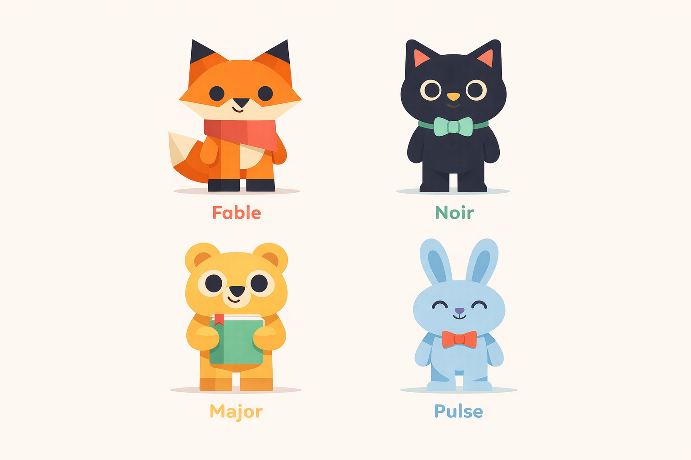
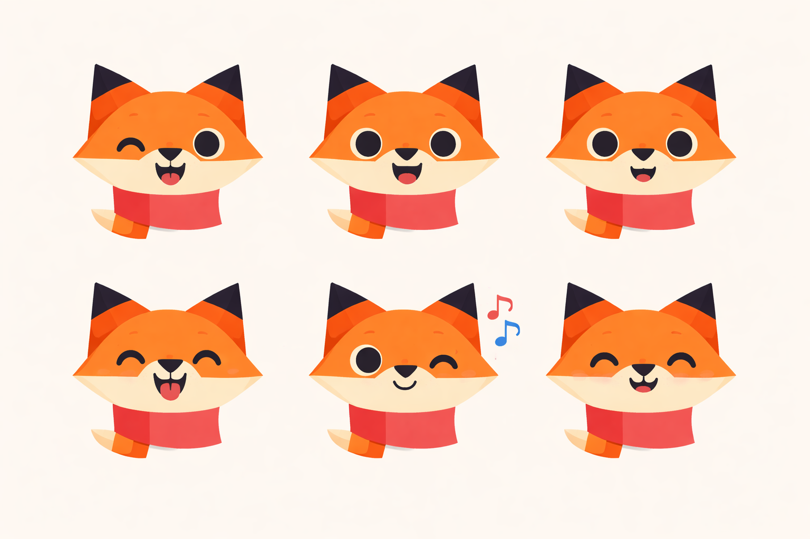
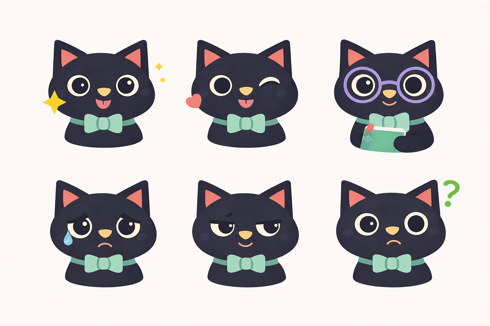
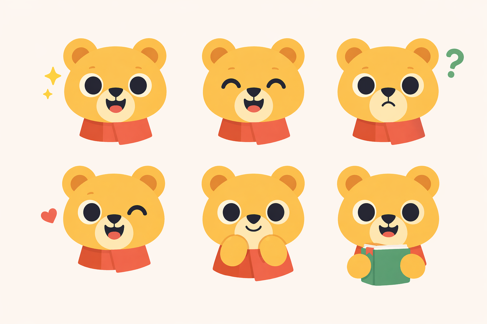
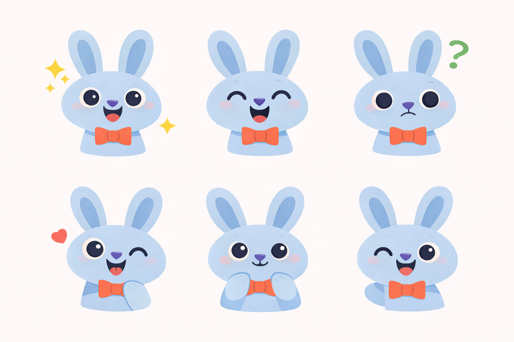
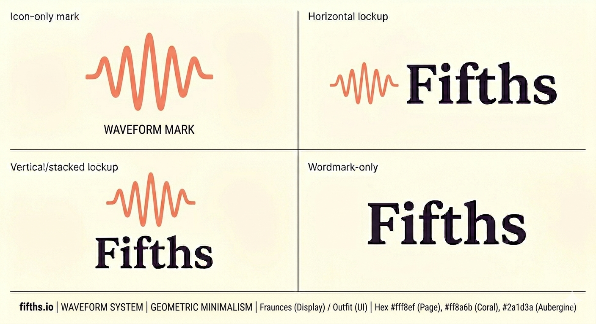